Lisbon has quietly become one of Europe's top cities for remote work. The combination of affordable living, year-round sunshine, excellent coffee culture, and a growing nomad community makes it a magnet for location-independent workers from around the world.
We analyzed Reddit posts from r/digitalnomad, r/lisboa, r/PortugalExpats, and r/travel to find the cafés that actual remote workers and long-term residents recommend for getting real work done. Not just pretty Instagram spots — places with fast wifi, power outlets, and a culture that actually welcomes laptops.
📊 How we built this list
We analyzed 150+ Reddit posts and 800+ comments across r/digitalnomad, r/lisboa, r/PortugalExpats, and r/travel — spanning 2021 to 2026. Cafés were ranked by how frequently they were recommended by independent users specifically for laptop work. Every spot on this list was confirmed laptop-friendly as of early 2026. We flagged places that have recently restricted laptops so you don't waste a trip.
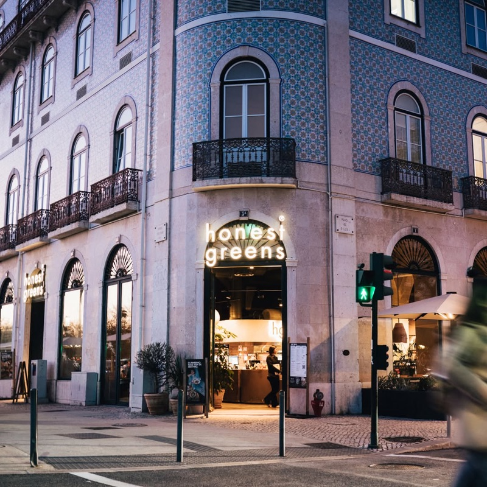
Work setup: 170+ seats inside across three rooms, 100 outside. Fast free wifi. Limited outlets — arrive charged. Open until midnight most nights. Back room is the unofficial nomad zone.
"Honest Greens is probably my favourite place to work in Lisbon, with its Cais do Sodré location being the jewel in its crown. This huge building is made up of three rooms, so there's always space for you and your laptop."
— Remote work blogger, confirmed by multiple r/digitalnomad posts
tabiji verdict: The undisputed king of Lisbon working cafés. Multiple locations but Cais do Sodré is the one — massive space, late hours, healthy food, and a back room full of nomads. The refillable drink hack lets you work guilt-free for hours. Outlets are scarce though, so come charged.
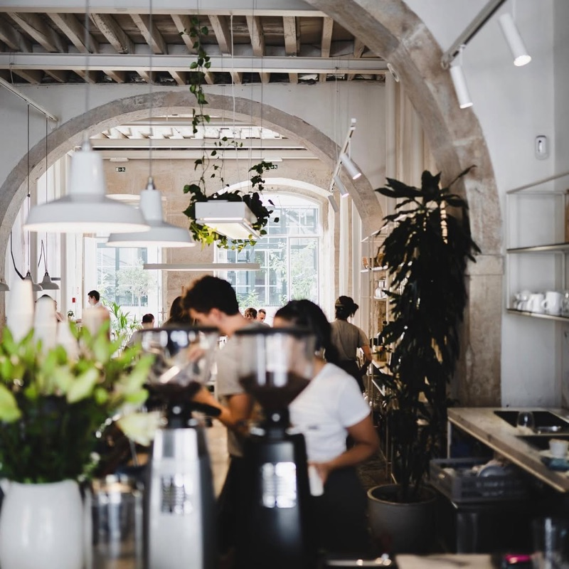
Work setup: Fair Trade organic coffee, plant-based milk alternatives (almond, coconut, rice). Long communal tables in the rear for workers. Plenty of outlets. Stools only — no proper chairs. Gets busy, arrive early.
"COMOBÁ which is close to Cais do Sodré Metro Station. A lovely café perfectly equipped for DNs (sockets to plug laptops, wifi) and it has a delicious menu and good coffee. I had a great time there and met interesting people who were all traveling and working at the same time."
— u/Miller1979 · r/digitalnomad, July 2021
tabiji verdict: The digital nomad social hub of Lisbon. Comobå nails the balance between work café and community space — you'll meet other remote workers here whether you want to or not. The Fair Trade coffee is excellent, breakfast burritos are legendary. Only downside: stools instead of chairs, so not ideal for 8-hour marathon sessions.
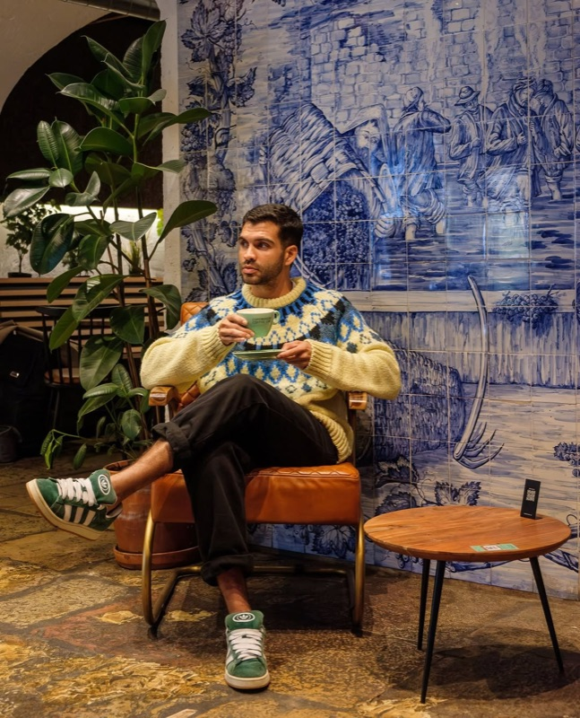
Work setup: Scandinavian minimalist design. Fast wifi, plenty of outlets, guilt-free laptop policy. Locations in Chiado, Alfama, Alcântara, Estrela, and more. Dark/moody interiors. Open 8am–6pm.
"Copenhagen Coffee Lab is popular with students and remote workers, which means you'll never be the only one with your laptop out."
— Digital nomad blog, echoed across r/digitalnomad threads
"Thankfully now more and more like Copenhagen ask that you not do this. We were pleased yesterday to be able to enjoy a coffee in the centre again."
— u/suitcaseismyhome · r/digitalnomad, November 2022
tabiji verdict: The reliable workhorse — with 8+ locations, there's always one nearby. Coffee quality is consistently excellent (Scandinavian roasting style). Some locations have added laptop restrictions during peak hours, so check before you settle in. The Alcântara and Estrela spots tend to be quieter than the tourist-area ones. Interiors are on the darker side — not great if you need natural light.
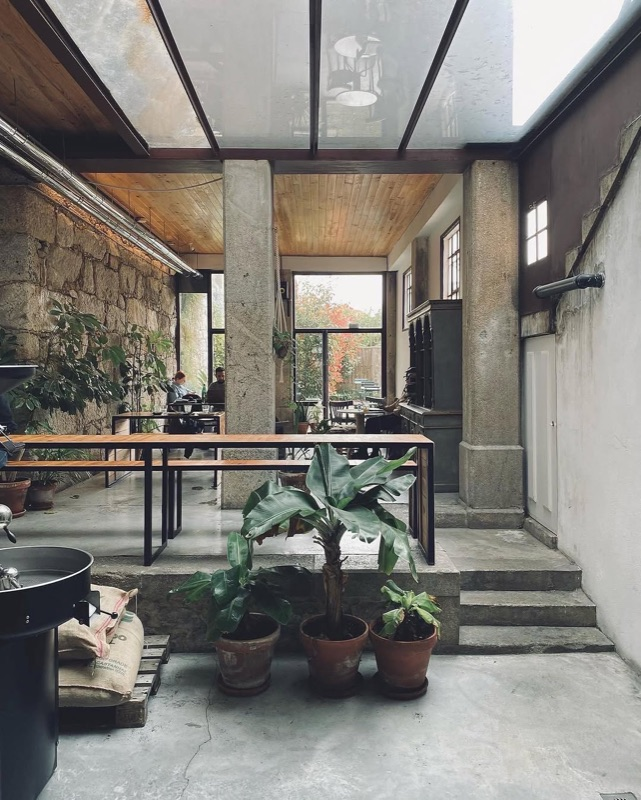
Work setup: In-house roasted specialty coffee — some of the best in Lisbon. Spacious layouts with dedicated work areas. Ample power outlets. Indoor and outdoor seating. Light food (sandwiches, toast, pastries). Open 9am–5pm.
"Fábrica Coffee Roasters has mastered the art of being both a specialty coffee destination and a laptop-friendly workspace. Their in-house roasting operation ensures every cup meets the standards of coffee-obsessed nomads."
— Nomad Cloud, confirmed by r/digitalnomad recommendations
tabiji verdict: If coffee quality is your top priority, Fábrica wins. They roast their own beans and it shows — the espresso and pour-overs are legitimately world-class. The industrial-chic spaces are surprisingly functional for work, with better outlet access than most Lisbon cafés. Five locations means you can find one in your neighborhood. Food is secondary here — come for the coffee, bring snacks if you need a proper meal.

Work setup: Purpose-built coworking café. Day pass €17, weekly €70, monthly €150. Unlimited hot desk Mon–Fri, meeting rooms, phone booths, one welcome drink included. Avo toast, smoothie bowls, juices on the menu.
"If you're looking to get your head down and have a productive day's work, or if you need a quiet space to take calls, this is the place to do it."
— Multiple nomad blog reviews, referenced in r/PortugalExpats
tabiji verdict: The only paid option on this list — and worth it if you need guaranteed productivity. Meeting rooms and phone booths solve the "I have a call in 5 minutes" panic that hits at regular cafés. The coliving space upstairs means Outsite deeply understands what nomads need. At €17/day it's cheaper than most coworking spaces and comes with better food. Not open on weekends though.
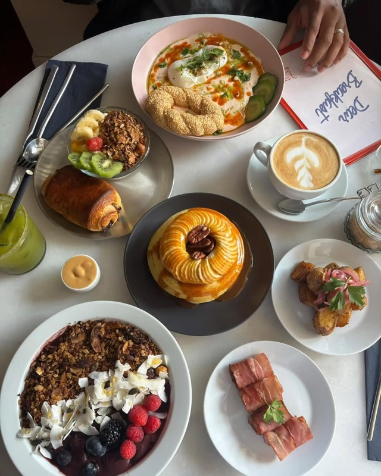
Work setup: Bright, arched-ceiling space in Bica. Plenty of power sockets, wifi code on the menu. Gets busy at peak brunch hours — arrive early or go off-peak. Three locations across central Lisbon. Book ahead on weekends.
"Dear Breakfast Bica is bright and cosy with a lovely arched ceiling. There are plenty of power sockets, the wifi code is on the menu to make things easy."
— The Global Circle, confirmed by r/lisboa recommendations
tabiji verdict: A gorgeous brunch spot that happens to welcome laptops. The Bica location is the best for working — arched ceilings, natural light, and outlets at most tables. The eggs royale and croque madame are genuinely excellent fuel for a work session. Not a place to camp all day (too popular), but perfect for a 2-3 hour morning productivity burst with incredible food.
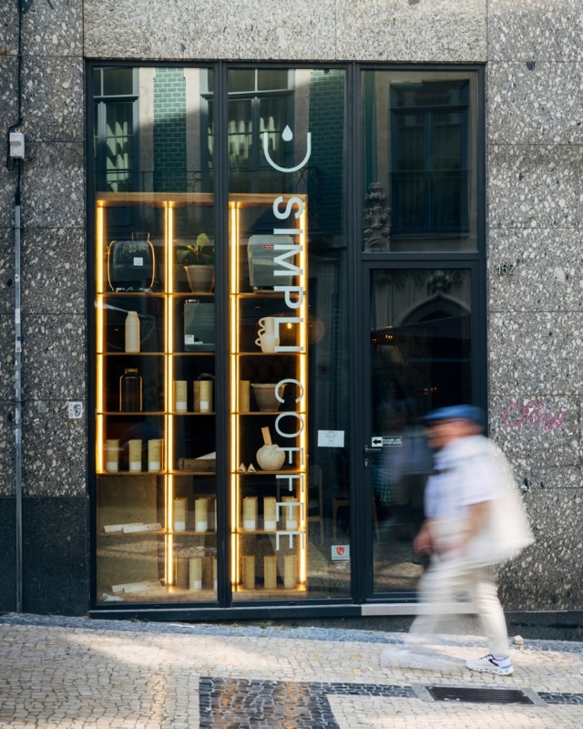
Work setup: Strong wifi, rare organic Arabica coffee sourced directly from farmers. Fresh cakes and sourdough baked daily. 20+ brunch dishes. Friendly, welcoming atmosphere. Open 8:30am–5pm weekdays, 9am–5pm Saturday.
"I used to go to the Simpli Coffee location in Picoas. I paid a little over 6 euros for a cappuccino and an empanada."
— The Slow Travelista, echoed in r/lisboa café threads
tabiji verdict: A quiet neighborhood gem near Marquês de Pombal that serious coffee drinkers love. They work directly with farmers for rare single-origin beans — you can taste the difference. The sourdough is baked fresh daily and the French toast is a cult favorite. Less of a nomad scene than Comobå or Honest Greens, which might be exactly what you want when you need to focus.
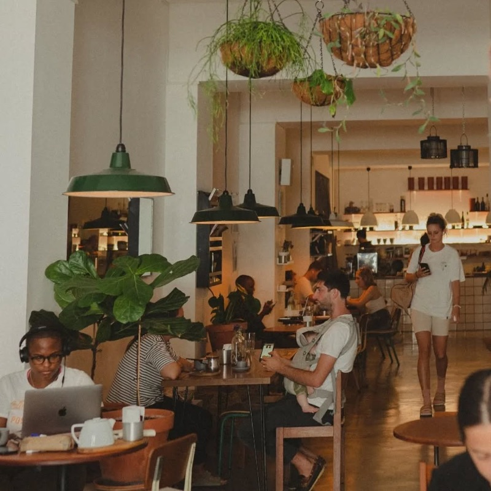
Work setup: Spacious multi-function space: café, gallery, bar, and shop. Several tables at the back for laptops. Fast wifi, friendly staff. Fresh juices, acai bowls, salads. Wine available from 5pm. Open 10am–6pm weekdays, 10am–5pm weekends.
"Curva has a very nice, relaxed atmosphere, reasonable prices and a nice design. There are a couple of tables at the back where you can crack open your laptop."
— The Global Circle, referenced in r/lisboa work café threads
tabiji verdict: The best work café in Graça, hands down. Curva is more than a café — it's a gallery, shop, and wine bar wrapped into one beautiful space. The location away from the tourist center means it's rarely overcrowded. Work in the back, browse the gallery during breaks, then transition to wine when 5 PM hits. The kind of place that makes you feel like you've actually found a life-work balance.
☕ €3–8
📍 Alcântara — LX Factory, Rua Rodrigues de Faria 103
📌 Google Maps →
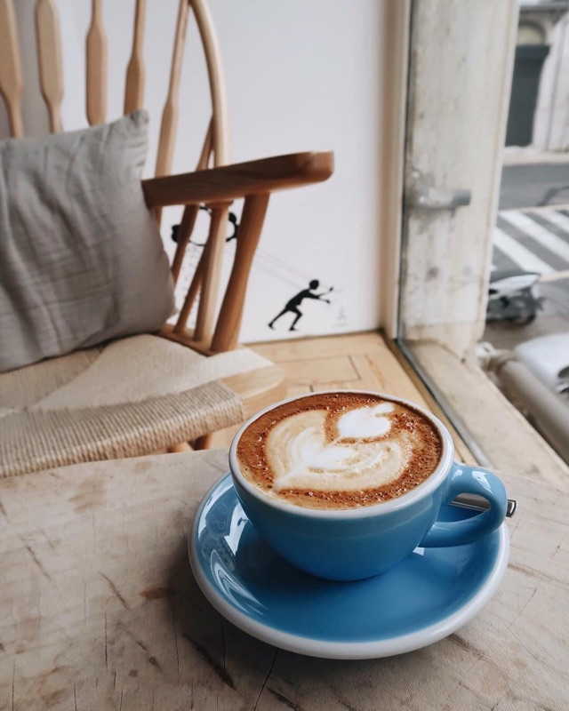
Work setup: Airy, light-filled, beachy space inside LX Factory. Laptops warmly welcomed. Laid-back atmosphere perfect for creative work. Good wifi. Specialty coffee with a "slow" philosophy. Open 10am–7pm daily.
"Wish Slow Coffee House lives up to its name with a laid-back approach that appeals particularly to creatives and freelancers who prefer a more relaxed work environment."
— Nomad Cloud, multiple r/digitalnomad mentions
tabiji verdict: LX Factory is Lisbon's creative heartbeat, and Wish Slow is where you go to tap into that energy while actually getting work done. The slow coffee philosophy means they take their time — don't come here expecting fast-food efficiency. Come expecting inspiration. The space is gorgeous, the vibe is unrushed, and the 50+ shops, galleries, and restaurants outside your door make for the best lunch breaks in Lisbon.
☕ €3–10 (€10 min. for all-day)
📍 Cais do Sodré — Rua Dom Luís I 22
📌 Google Maps →
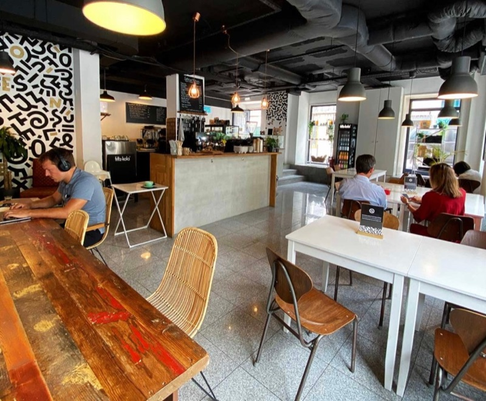
Work setup: 150m² purpose-built work space. Plenty of desks but most lack outlet access — arrive charged. €10 minimum consumption for full-day workers (just a coffee for shorter visits). Quiet atmosphere, good vibes. Quality toasties and shakshuka.
"Dual operates as a cafe and doesn't charge a fee — there is a minimum €10 consumption requirement if you plan to work for a whole day which is fair enough."
— The Global Circle, confirmed by r/digitalnomad users
tabiji verdict: The most work-focused free café in Lisbon. Dual started as a barista training pop-up and evolved into a proper work café that understands the assignment. The €10 all-day minimum is extremely fair — two coffees and a toastie covers it. The space is quiet and purpose-built for concentration. Only downside: limited outlets, so treat your battery like a precious resource.
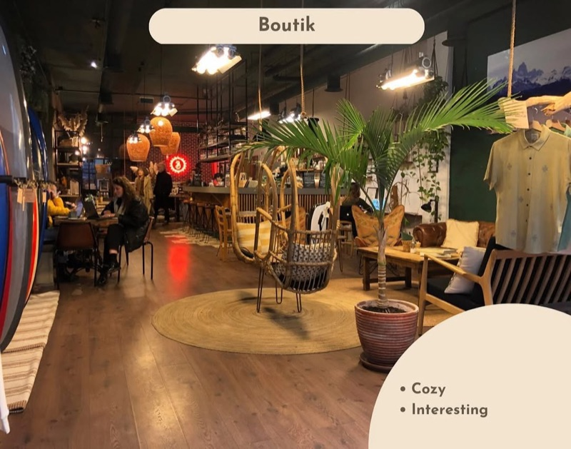
Work setup: Café + surf shack + lifestyle shop. Strong wifi, laptops welcome. Hidden gem — rarely crowded. Great acai bowls, poké bowls, healthy homemade food. Budget-friendly prices. Open 9am–7pm Mon–Sat, 9am–6pm Sunday.
"Because it's a bit of a hidden gem, there will always be a space waiting for you. Everything here is so tasty and super wallet-friendly."
— Digital nomad blog, echoed in r/lisboa threads
tabiji verdict: The hidden gem on this list. Boutik isn't marketed as a work café, which is exactly why it works — you won't be competing for tables with 50 other nomads. The São Bento neighborhood is trendy but calm, the food is healthy and affordable, and the attached surf shop gives the space a relaxed coastal energy. Take a laptop break to browse their ethical fashion and local crafts.
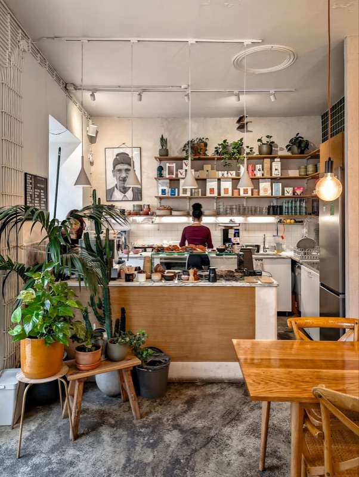
Work setup: Small, inspiring space with clean Nordic design. Specialty coffee (try the matcha latte). Magazine library for screen breaks. Laptops welcome but space is very limited — may need to wait. ⚠️ Some recent reports of laptop restrictions. Open 9am–4pm daily.
"Hello Kristof is no longer laptop-friendly — they have no laptop signs on some tables. Do keep in mind before heading over."
— The Global Circle reader update, 2024
tabiji verdict: ⚠️ Laptop-friendliness is uncertain. Hello, Kristof is genuinely one of the most beautiful, inspiring cafés in Lisbon — the magazine collection alone is worth the visit. The matcha latte is perfection. But recent reports suggest they've started restricting laptops at some tables. Visit for the experience and coffee, but don't count on it as your daily workspace. If you do get a table, the creative energy here is unmatched.
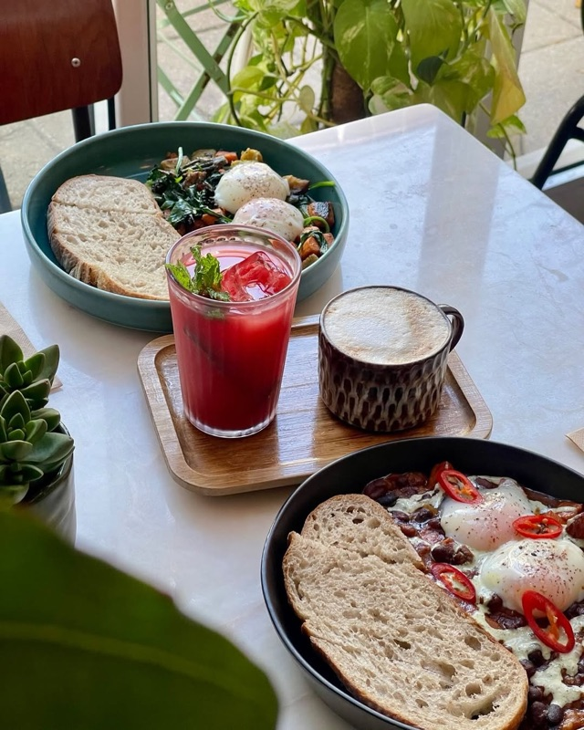
Work setup: Modern, stylish neighborhood spot. Indoor work areas and small outdoor terrace. Full menu from morning coffee to evening cocktails. Everything from toasties to burgers to salad bowls. Open daily 8:30am–11pm. Near Intendente metro.
"Maria Food Hub is a modern and stylish place offering everything from tea and coffee to cocktails. It has places inside where you can remote work to your heart's content."
— The Global Circle, referenced in r/lisboa
tabiji verdict: The best work café in the Anjos/Intendente neighborhood — one of Lisbon's most up-and-coming areas. The 8:30am to 11pm hours are a godsend if you work odd hours or want to transition from work to dinner without moving. The neighborhood is more local than Cais do Sodré, which means cheaper prices and fewer nomad crowds. The full cocktail menu at the end of a work day doesn't hurt either.
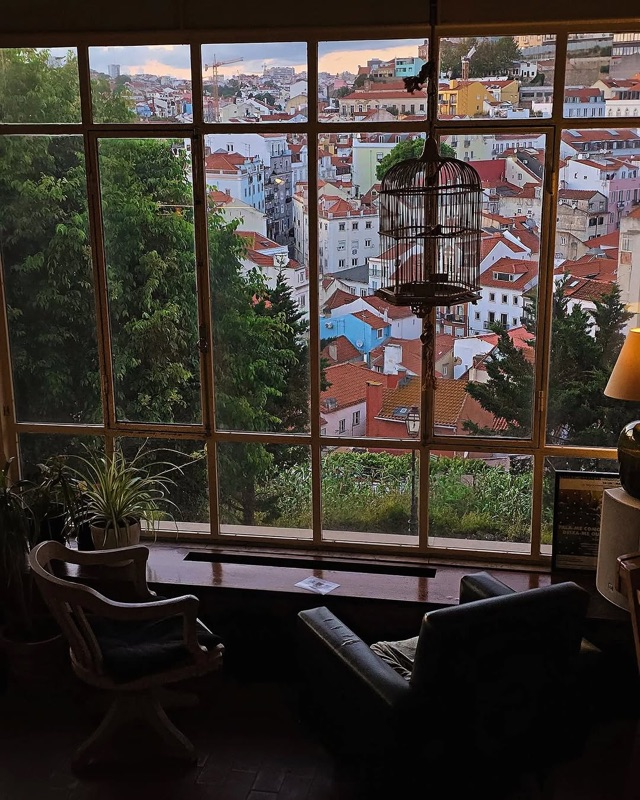
Work setup: Sweeping panoramic views over Lisbon from this theater café. ⚠️ Only 1 table (4 seats) available for laptop work as of 2024. Worth visiting for coffee and views even if you can't work. Affordable prices.
"Amusingly, Castelo São Jorge has a big sign saying co-working welcome, and has free wifi — after paying the 10 euro entry."
— r/digitalnomad · November 2022
tabiji verdict: ⚠️ Very limited laptop space. Café da Garagem has the best view of any café in Lisbon — full stop. But they've restricted laptop use to just one table. Come for the sunset views and a coffee break, not for a full work day. If you do snag the work table, congratulations — you've won the Lisbon café lottery. The views alone will make your Zoom backgrounds the envy of every meeting.
☕ €3–10
📍 Graça / Alfama — Rua do Vale de Santo António 48c
📌 Google Maps →
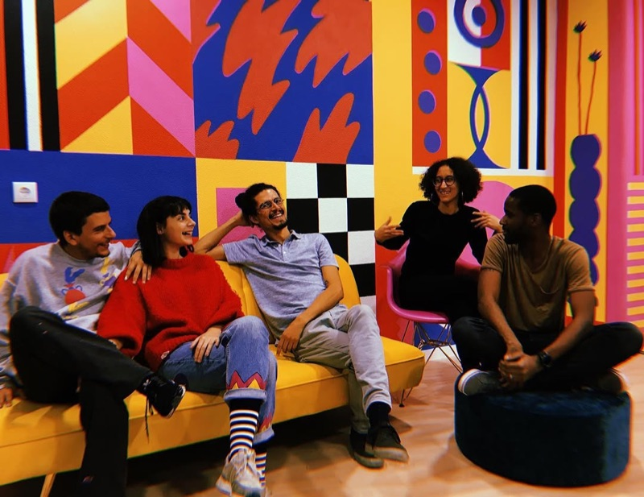
Work setup: Authentic, chilled, slightly alternative vibe. Not trying to be Instagram-worthy. Nice food and drinks menu for extending into the evening. Laptop-friendly without being a "nomad café." Located between Graça and Alfama.
"Homie's has an authentic chilled, friendly vibe in the nicest of ways. It's not trying to be Instagrammable — it will make sense when you go."
— The Global Circle, echoed in r/lisboa threads
tabiji verdict: If you're tired of the polished nomad café scene, Homie's is the antidote. It's the kind of place where you feel like a regular after two visits. The slightly alternative vibe attracts an interesting mix of locals and longer-term residents rather than the usual nomad crowd. Not the most productive space for heads-down work, but perfect for the kind of day where you want to work a bit, chat a bit, and feel like you actually live in Lisbon.
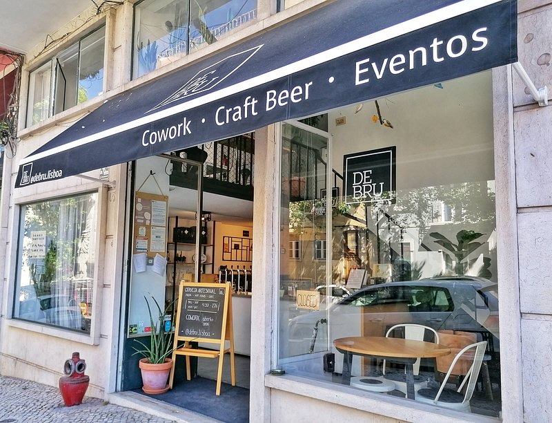
Work setup: Craft beer brewery with coworking-friendly space. Work in the afternoon, reward yourself with their house-brewed beers in the evening. Unique concept for those who want to combine productivity with craft beer culture.
"On a beautiful sunny Lisbon late afternoon, why not grab a cold glass of craft beer while you get on with your work? DeBru is the kind of place to do it."
— The Global Circle, referenced in r/lisboa
tabiji verdict: The wildcard pick. A craft beer brewery that doubles as a coworking space? Only in Lisbon. DeBru is ideal for those afternoon sessions when you need to wrap up a project and want a cold reward waiting. Not where you'd go for your most focused work, but for a creative afternoon session with a beer-to-work ratio that gradually shifts — it's perfect. Their house-brewed IPAs are seriously good.
Frequently Asked Questions
Is it acceptable to work on a laptop in Lisbon cafés?
Generally yes, but with caveats. Lisbon's popularity with digital nomads has caused some pushback — a few cafés that were once laptop-friendly have added restrictions. The key is to order regularly (not just one coffee for 5 hours), avoid peak lunch rushes, and choose cafés that explicitly welcome remote workers. All spots on this list are laptop-friendly, though we've flagged ones with recent restrictions.
How fast is café wifi in Lisbon?
Most laptop-friendly cafés offer 20–80 Mbps, sufficient for video calls and general work. Dedicated cowork cafés like Outsite and Dual have the most reliable connections. Always carry a mobile hotspot as backup — Portuguese 4G/5G is excellent and affordable. Pre-paid SIMs with data are available from MEO, Vodafone, and NOS for around €16/month for 10GB.
How much does a working day at a Lisbon café cost?
A typical café day costs €8–15: two coffees (€2–3.50 each), a lunch item (€6–10), and maybe an afternoon pastry (€2–3). Some spots like Dual have a €10 minimum consumption for all-day workers. Cowork cafés like Outsite charge €17/day for a dedicated pass. Compared to coworking spaces (€15–25/day), cafés are a budget-friendly option.
What are the best neighborhoods for working cafés in Lisbon?
Cais do Sodré has the highest concentration (Honest Greens, Comobå, Dual). Príncipe Real and São Bento are trendy alternatives with quieter vibes. Graça has gems like Curva. For a creative atmosphere, LX Factory in Alcântara houses Wish Slow Coffee House. The Anjos/Intendente area is emerging as a more local, affordable alternative.
Do Lisbon cafés have power outlets for laptops?
It varies widely. Comobå and Outsite have plenty. Honest Greens and Fábrica have limited outlets — arrive charged. Portugal uses Type F plugs (same as most of continental Europe). Bringing a small power strip is a pro move that fellow nomads will appreciate. Some cafés are generous with outlets, others are not — we've noted this for each spot.
When is the best time to work from cafés in Lisbon?
Early morning (8–10 AM) is ideal — beat the brunch crowds and get the best seats near outlets. Mid-afternoon (2–4 PM) is another sweet spot after the lunch rush. Avoid 12–2 PM at popular brunch spots. Weekdays are significantly quieter than weekends. Some spots like Honest Greens stay open until midnight, great for evening sessions.